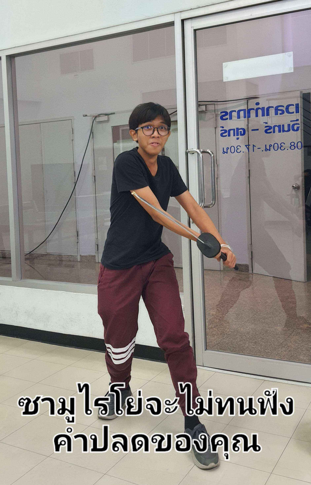

รายละเอียดโครงงาน
โครงงานนี้จัดทำขึ้นมาเพื่อ ใช้แก้ปัญหาการเช็คช่องสินค้า ให้สามารถเช็คผ่านทาง Internet ได้ โดยใช้ Ultrasonic sensor เพื่อวัดระยะห่างจากวัตถุโดยถ้าค่าที่อ่านได้จาก sensor เกินกว่าที่กำหนดจะระบุว่าช่องนั้นๆ ไม่ว่าง แต่ถ้าค่าที่อ่านได้ไม่เกินที่กำหนดจะระบุว่าช่องนั้นๆ ว่าง
โดยเราจะสามารถดูว่าช่องสินค้านั้นว่างหรือไม่ ได้จาก Website จาก Link นี้เลย
INPUT/OUTPUT
Input : รับข้อมูลจาก Ultrasonic sensor เพื่อนำไปคำนวณหาระยะห่าง
Output : แสดงข้อมูลว่าช่องสินค้านั้นๆ ว่างหรือไม่
SOURCE CODE
VIDEO
MEMBER

นายวีรภัทร์ เศรษฐชัยน้อย
66070308

นายสิรวิชญ์ จันทร์เต็มดวง
66070314

นายแสงชัย โรจน์ธนิกกุล
66070317